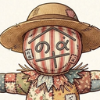

カカシメ
(案山子目)
留守中の畑を、クラウド越しに見守ります。
見守リスクに続く、新しい見守りです。
クラウド監視カメラの運用を提供するサービスです。
リアルな今の映像や過去の録画映像を、クラウド経由で照会できる状態に仮設定してお届けします。お客様は専用アプリをスマホやタブレットにインストールし、自宅のWiFiをカメラに教えるだけで大丈夫。
なおカメラ本体は当店で用意して貸し出します。サービス終了時にご返却ください。
ご利用には設置場所に電源とWiFiの両方が必要です。共同の家庭菜園など、どちらも用意できない場所ではお使いいただけません。SIMは入っておらず、通信はお客様のWiFiを利用するものです。